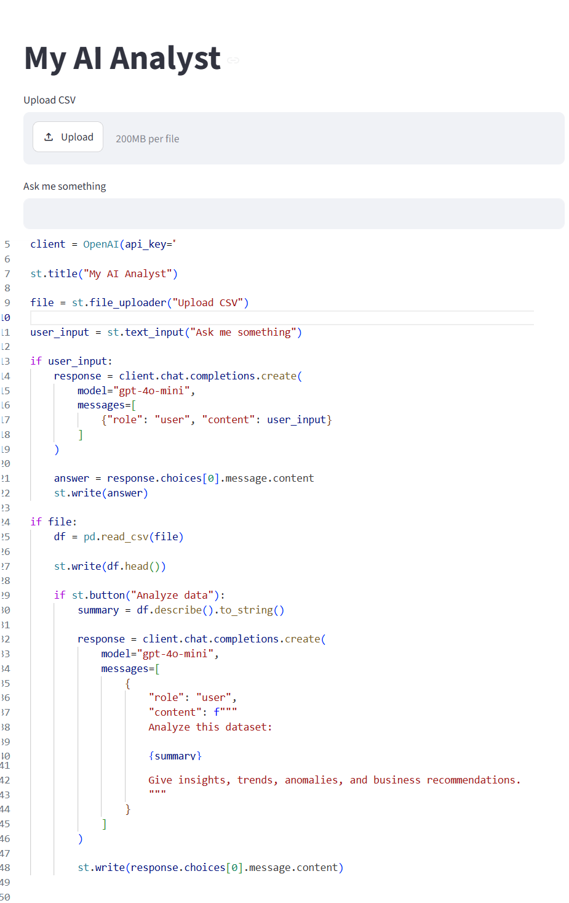

Interaktywna aplikacja analityczna wykorzystująca sztuczną inteligencję, umożliwiająca przesyłanie zbiorów danych w formacie CSV oraz automatyczne generowanie podsumowań statystycznych i wniosków analitycznych.
Aplikacja wykorzystuje bibliotekę Pandas do przeprowadzania analizy statystycznej danych oraz integruje OpenAI API w celu generowania interpretacji wyników w języku naturalnym.
Główne funkcjonalności:Poznanie praktycznych zastosowań generatywnej sztucznej inteligencji w analityce danych oraz pokazanie, w jaki sposób AI może ułatwiać interpretację danych osobom bez zaawansowanej wiedzy technicznej.
